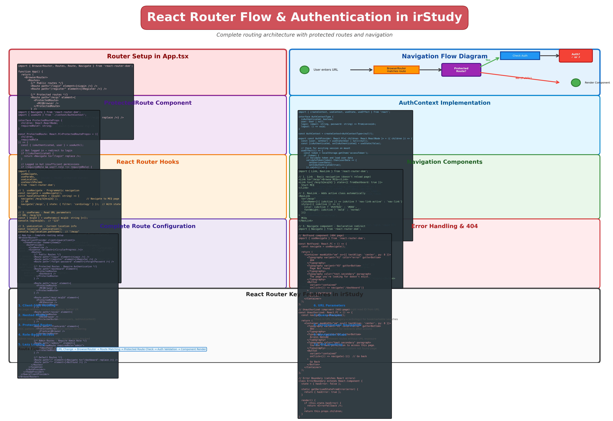
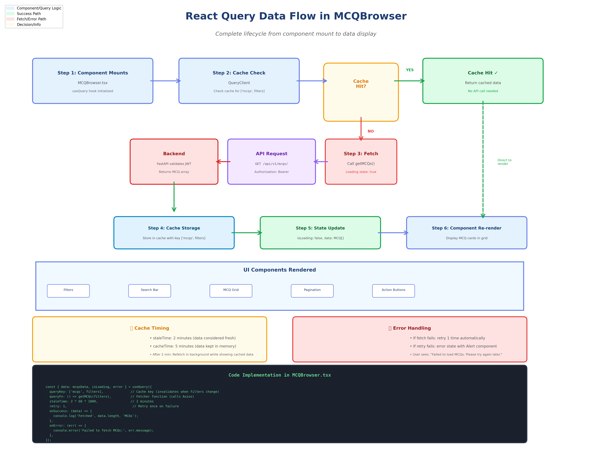
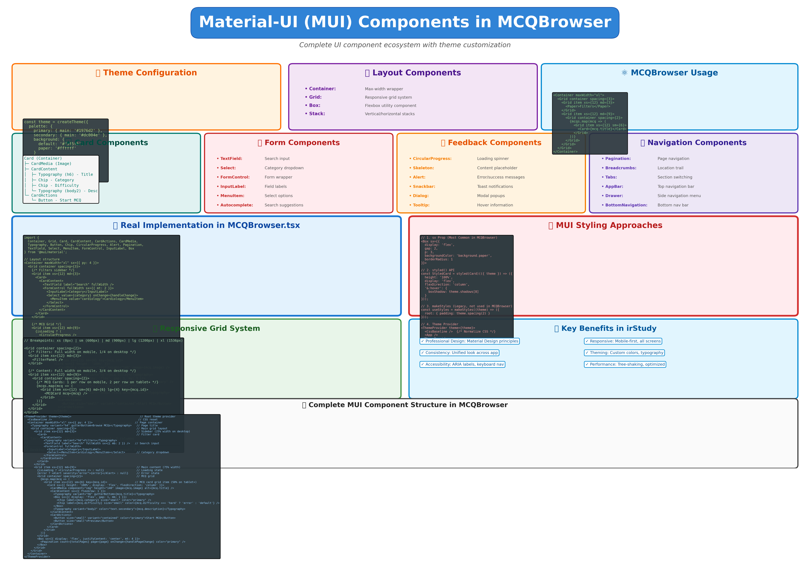
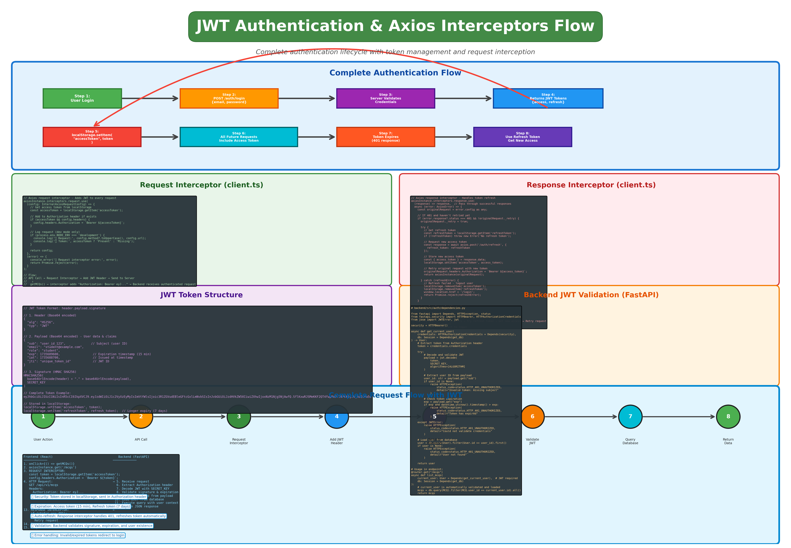
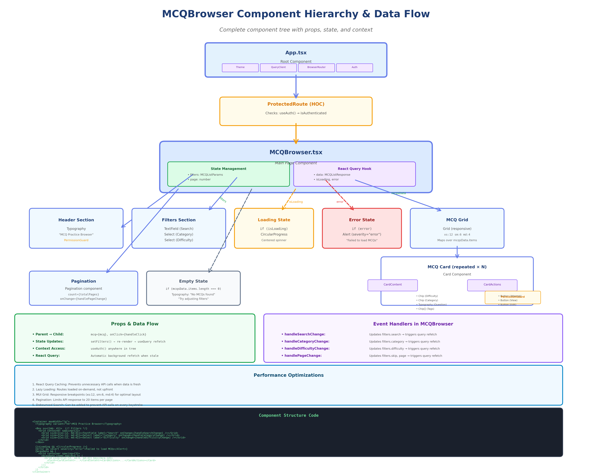

📖 About This Documentation
This comprehensive documentation breaks down the MCQ browser page architecture into digestible sections. Each page focuses on a specific aspect of the system, providing detailed explanations, code examples, and interactive demonstrations.
📦 React Packages & Imports Explained
Understanding what each package does in App.tsx and why we use them.
- Suspense: Component that handles lazy loading fallbacks
- Displays loading UI (CircularProgress) while lazy components load
- Prevents blank screens during code splitting
- Improves initial page load time by code splitting
- MCQBrowser, Login, and other pages load only when needed
- Better user experience with loading indicators
<Suspense fallback={<LoadingFallback />}>
<Routes>
{/* Routes load lazily */}
</Routes>
</Suspense>
- BrowserRouter: Root router component using HTML5 history API
- Routes: Container for all route definitions
- Route: Defines a single route mapping (path → component)
- Navigate: Programmatic navigation component for redirects
- Single Page Application (SPA) navigation
- No full page reloads when switching between MCQs, Dashboard, etc.
- Preserves application state during navigation
- SEO-friendly URLs (e.g., /mcqs, /dashboard)
<BrowserRouter>
<Routes>
<Route path="/mcqs" element={<MCQBrowser />} />
<Route path="/dashboard" element={<Dashboard />} />
<Route path="/" element={<Navigate to="/dashboard" />} />
</Routes>
</BrowserRouter>

Complete routing architecture with protected routes, navigation hooks, and route configuration
- QueryClient: Manages cache, queries, and mutations
- QueryClientProvider: Makes QueryClient available to all components
- Automatic background refetching and cache invalidation
- Handles loading, error, and success states automatically
- Smart caching: MCQ list fetched once, cached for 5 minutes
- Auto-retry: Retries failed requests automatically
- Optimistic updates: UI updates immediately, syncs later
- No Redux needed: Manages server state without boilerplate
const queryClient = new QueryClient({
defaultOptions: {
queries: {
refetchOnWindowFocus: false, // Don't refetch on tab switch
retry: 1, // Retry once on failure
staleTime: 5 * 60 * 1000, // Consider fresh for 5 min
},
},
});
const { data, isLoading, error } = useQuery({
queryKey: ['mcqs', filters], // Cache key
queryFn: () => getMCQs(filters),
staleTime: 2 * 60 * 1000, // 2 min for MCQs
});

Complete React Query lifecycle from component mount to data display with cache management
import CssBaseline from "@mui/material/CssBaseline"
import { CircularProgress, Box } from "@mui/material"
- ThemeProvider: Applies custom theme (colors, fonts) to entire app
- CssBaseline: Normalizes CSS across browsers (like CSS reset)
- CircularProgress: Spinning loader animation
- Box: Flexible container component for layouts
- Consistent design: Professional look without custom CSS
- Accessibility: WCAG 2.2 AA compliant out of the box
- Responsive: Mobile-first components
- Rich components: Cards, Buttons, Dialogs, Forms, etc.
- Theming: Easy to customize colors, spacing, typography
const theme = createTheme({
palette: {
primary: { main: '#667eea' },
secondary: { main: '#764ba2' },
},
typography: {
fontFamily: 'Segoe UI, Roboto, Arial',
},
});
- Container: Responsive page container with max-width
- Typography: Text with consistent styling
- Card: MCQ cards in the grid
- Button: Attempt, View, Edit actions
- TextField: Search input
- Select/MenuItem: Category and difficulty dropdowns
- Chip: Difficulty badges and tags
- Pagination: Page navigation
- Alert: Error messages

Complete Material-UI ecosystem with theme configuration, component usage, styling approaches, and responsive design
import ProtectedRoute from "./components/ProtectedRoute"
import MobileBottomNav from "./components/layout/MobileBottomNav"
import { FlashcardReview } from "./components/study-cards/FlashcardReview"
- Purpose: Global authentication state management
- Provides: user, isAuthenticated, login(), logout() functions
- Used by: ProtectedRoute, nav components, API client
- Pattern: React Context API for sharing auth across app
const AuthContext = createContext();
function AuthProvider({ children }) {
const [user, setUser] = useState(null);
const [isAuthenticated, setIsAuthenticated] = useState(false);
// Check localStorage for token on mount
useEffect(() => {
const token = localStorage.getItem('accessToken');
if (token) {
// Decode and validate token
setIsAuthenticated(true);
}
}, []);
return (
<AuthContext.Provider value={{ user, isAuthenticated }}>
{children}
</AuthContext.Provider>
);
}
- Purpose: Guard routes requiring authentication
- Behavior: Redirects to /login if not authenticated
- Used on: /mcqs, /dashboard, /osce-practice, etc.
- Pattern: Higher-Order Component (HOC)
<Route
path="/mcqs"
element={
<ProtectedRoute>
<MCQBrowser />
</ProtectedRoute>
}
/>

Complete authentication lifecycle with JWT token management, Axios interceptors, and backend validation
- Purpose: Mobile navigation bar at bottom of screen
- Responsive: Shows only on screens < 768px
- Icons: Home, MCQs, OSCEs, Progress, Profile
- Pattern: Mobile-first responsive design
- Purpose: Spaced repetition study card system
- Algorithm: SM-2 (SuperMemo 2) for optimal learning
- Features: Flip cards, difficulty rating, progress tracking
- Route: /study-cards

Complete component tree from App.tsx through MCQBrowser with props flow, state management, and event handlers
- Color palette: Primary (purple), secondary (blue), success, error
- Typography: Font families, sizes, weights
- Spacing: Consistent padding/margin scale
- Breakpoints: Mobile, tablet, desktop sizes
- Component overrides: Custom button styles, card shadows
const theme = createTheme({
palette: {
primary: {
main: '#667eea', // Purple for primary actions
light: '#a5b4fc',
dark: '#4338ca',
},
secondary: {
main: '#764ba2', // Gradient accent
},
background: {
default: '#f8fafc', // Light gray background
paper: '#ffffff', // Card backgrounds
},
},
typography: {
fontFamily: '"Segoe UI", "Roboto", "Arial", sans-serif',
h1: { fontSize: '2.5rem', fontWeight: 700 },
h2: { fontSize: '2rem', fontWeight: 600 },
button: { textTransform: 'none' }, // No UPPERCASE buttons
},
components: {
MuiButton: {
styleOverrides: {
root: {
borderRadius: 8, // Rounded buttons
padding: '8px 24px',
},
},
},
},
});
📥 Installing These Packages
All packages are defined in frontend/package.json:
# Install all dependencies cd frontend npm install # Or install specific packages individually: npm install react react-dom npm install react-router-dom npm install @tanstack/react-query npm install @mui/material @emotion/react @emotion/styled npm install @mui/icons-material # TypeScript types (dev dependencies): npm install -D @types/react @types/react-dom
Package Versions Used:
| Package | Version | Bundle Size |
|---|---|---|
| react | 18.2.0 | ~6 KB (gzipped) |
| react-router-dom | 6.20.0 | ~11 KB |
| @tanstack/react-query | 4.35.0 | ~13 KB |
| @mui/material | 5.14.0 | ~90 KB (tree-shakeable) |
🗺️ Documentation Sections
⚡ Quick Access
📂 Documentation Files
| File | Type | Description | Size |
|---|---|---|---|
index.html |
HTML | Navigation hub (this page) | ~12 KB |
01-overview.html |
HTML | Architecture overview with tech stack | ~15 KB |
02-request-flow.html |
HTML | Complete request flow breakdown | ~18 KB |
03-frontend-components.html |
HTML | Frontend component details with code | ~25 KB |
04-api-layer.html |
HTML | API layer and HTTP client | ~20 KB |
05-backend-api.html |
HTML | Backend FastAPI endpoints | ~22 KB |
06-issues-troubleshooting.html |
HTML | Issues and solutions | ~20 KB |
styles.css |
CSS | Shared stylesheet | ~8 KB |
../mcq_architecture_diagram.png |
Image | Visual architecture diagram (300 DPI) | 1.1 MB |
../MCQ_PAGE_DIAGNOSIS_REPORT.md |
Markdown | Complete technical report (961 lines) | 28 KB |
🎓 How to Use This Documentation
For New Developers
- Start with 01 - Architecture Overview to understand the tech stack
- Read 02 - Request Flow to see how data flows through the system
- Study 03 - Frontend Components to understand UI implementation
- Review 04 - API Layer for HTTP communication patterns
- Explore 05 - Backend API to see server-side logic
- Refer to 06 - Troubleshooting when debugging issues
For Debugging
- Go directly to 06 - Issues & Troubleshooting
- Check the error symptoms against documented issues
- Follow step-by-step resolution guides
- Use browser DevTools commands provided in examples
- Test API endpoints with curl commands
For Code Review
- Focus on 03 - Frontend Components for UI review
- Read 04 - API Layer for authentication logic
- Study 05 - Backend API for endpoint implementation
- Compare actual code files with documented patterns
- Use the architecture diagram as a reference
Documentation Generated: May 26, 2026
irStudy Platform - Australian Medical Examination Preparation
Location: /home/dev/Development/irStudy/docs/mcq-architecture/